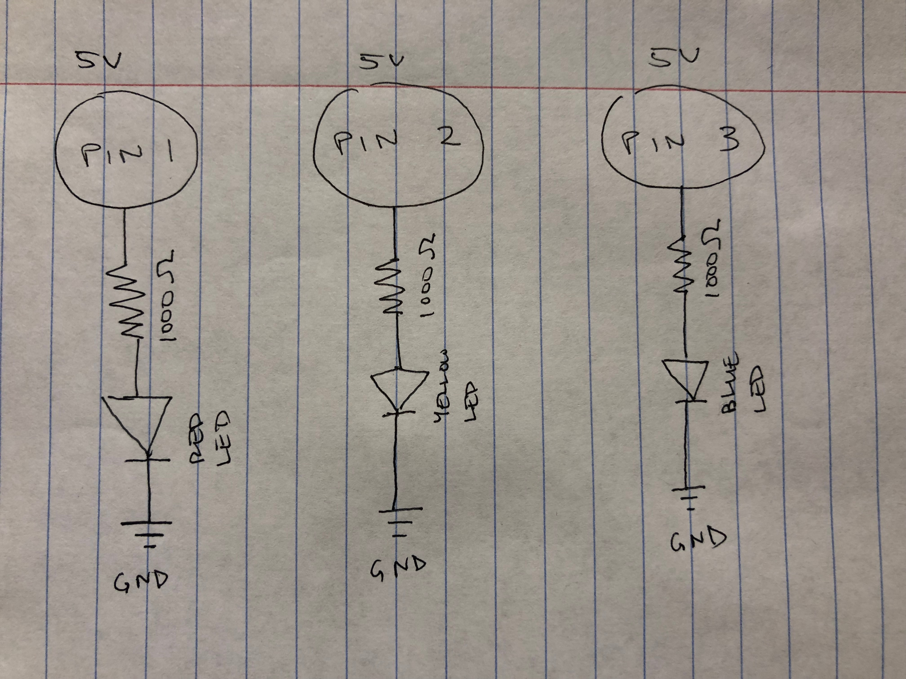

Assignment 1: Blink!

Calculating resistance for LEDs
For red and yellow LEDs:
1.8V drop, 5V power source, 20 mA
V = 5-1.8 = 3.2 V
V = I x R = 3.2 = 0.02 x R
R = 3.2/0.02 = 160 Ω
For the blue LED:
3.3V drop, 5V power source, 20 mA
V = 5-3.3 = 1.7 V
V = I x R = 1.7 = 0.02 x R
R = 1.7/0.02 = 85 Ω

Arduino code snippet
void setup() {
pinMode(1, OUTPUT); // initializes pin 1
pinMode(2, OUTPUT); // initializes pin 2
pinMode(3, OUTPUT); // initializes pin 3
}
void loop() {
digitalWrite(1, HIGH); // turn the LED on (HIGH is the voltage level)
delay(500); // wait for a second
digitalWrite(1, LOW); // turn the LED off by making the voltage LOW
delay(500); // wait for a second
digitalWrite(2, HIGH); // turn the LED on (HIGH is the voltage level)
delay(500); // wait for a second
digitalWrite(2, LOW); // turn the LED off by making the voltage LOW
delay(500); // wait for a second
digitalWrite(3, HIGH); // turn the LED on (HIGH is the voltage level)
delay(500); // wait for a second
digitalWrite(3, LOW); // turn the LED off by making the voltage LOW
delay(500); // wait for a second
}